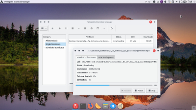
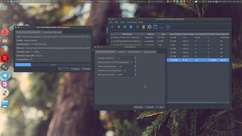
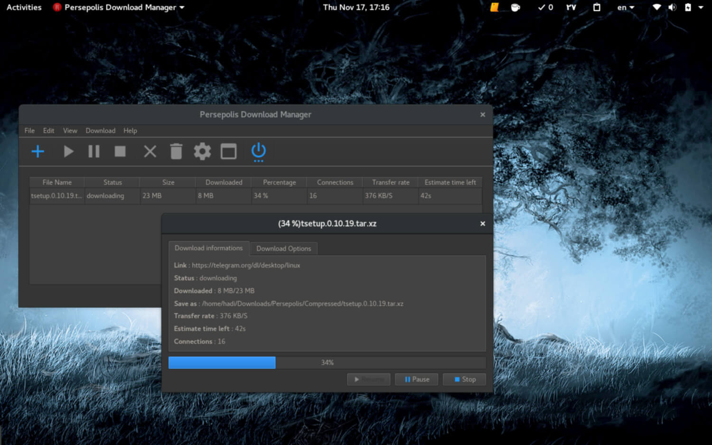
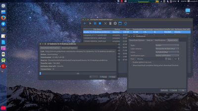
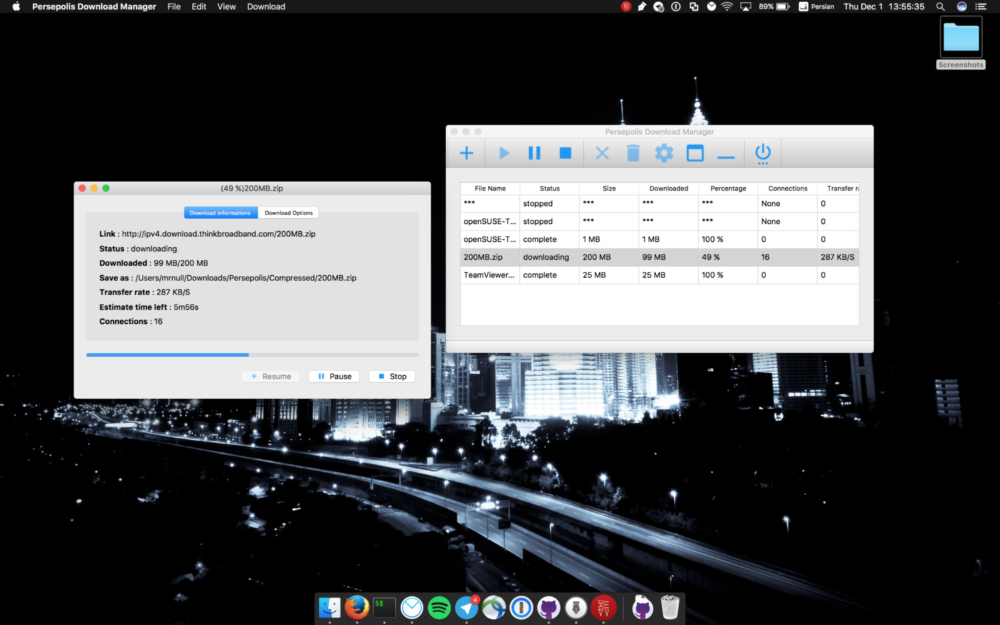
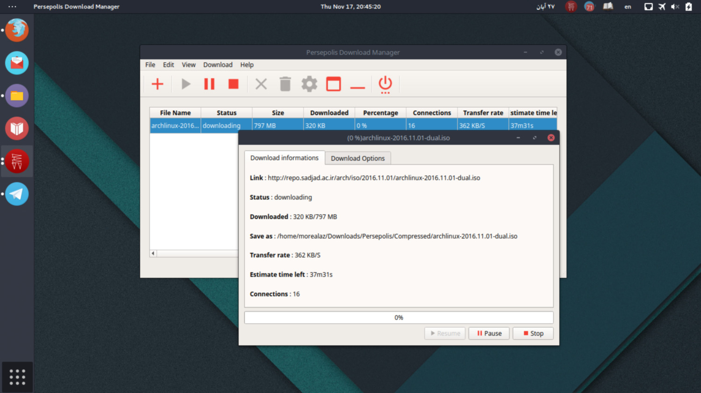

<!-- Portfolio Grid Section -->
    <link rel="stylesheet" href="../css/font-awesome/css/ideal-image-slider.css">
    <link rel="stylesheet" href="../css/font-awesome/css/default.css">
    <section id="second" class="bg-light-gray">
        <div class="container">
            <div class="row">
		<div class="col-lg-12 text-center">
                <h2 class="section-heading">درباره پرسپولیس</h2>
 		<h3 class="section-subheading text-muted">برخی ویژگی‌های پرسپولیس</h3>
		</div>
		<div class="col-md-6">
      <p>پرسپولیس یک دانلود منیجر و رابط کاربری گرافیکی برای Aria2 میباشد که با پایتون نوشته شده است.</br>
  		پرسپولیس نمونه‌ای از برنامه رایگان و آزاد است که برای توزیع های گنو/لینوکسی ، بی‌اس‌دی‌ها ، ویندوز و مکینتاش توسعه می یابد.</br>
  		شما هم می‌توانید با توسعه آن به ما کمک کنید</p>


		<ul>
			<li>رابط کاربری گرافیکی برای Aria2</li>
			<li>دانلود چند بخشی فایل</li>
			<li>زمانبندی دانلودها</li>
			<li>صف‌بندی دانلودها</li>
		</ul>

		</div>
	<div class="col-md-6 right">
	<div id="slider">
  	  
  	  
  	  
  	  
  	  
  	  
	</div>
 	<script src="../js/ideal-image-slider.js"></script>
	<script>
	var slider = new IdealImageSlider.Slider({
  	  selector: '#slider',
	  height: 320,
  	  interval: 2000
	});
	slider.start();
	</script></div>
            </div>
        </div>
    </section>
